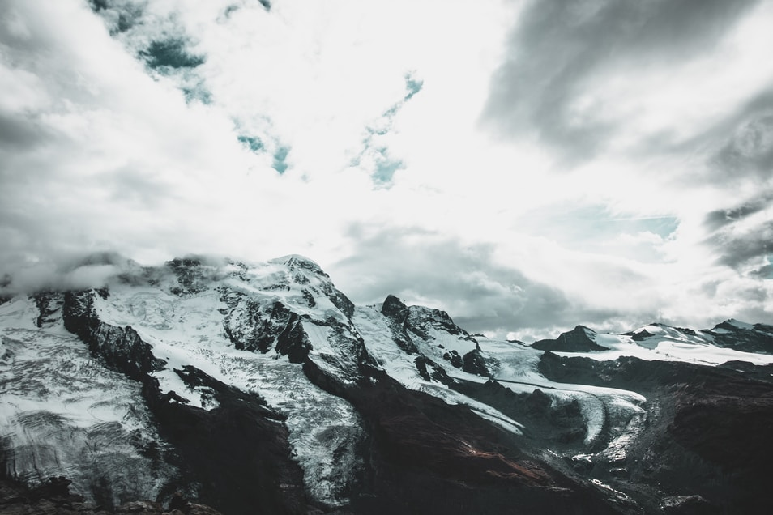

Popular destinations
Hello Switzerland!

Our Swiss adventure story



One of the best hikes we’ve done so far...
As one of the alpine countries, landlocked Switzerland with her mountains has to compete not only with her neighbours but with other destinations. There are, e.g., no coastal resorts. The advantage is that tourism in Switzerland benefits of a large diversity of beautiful landscapes in a relatively small space.Hightlights

The barns built in the 13th and 14th century

Riding the the amazing Bernina Express

The Matterhorn glacier cable car ride
Let’s build a community